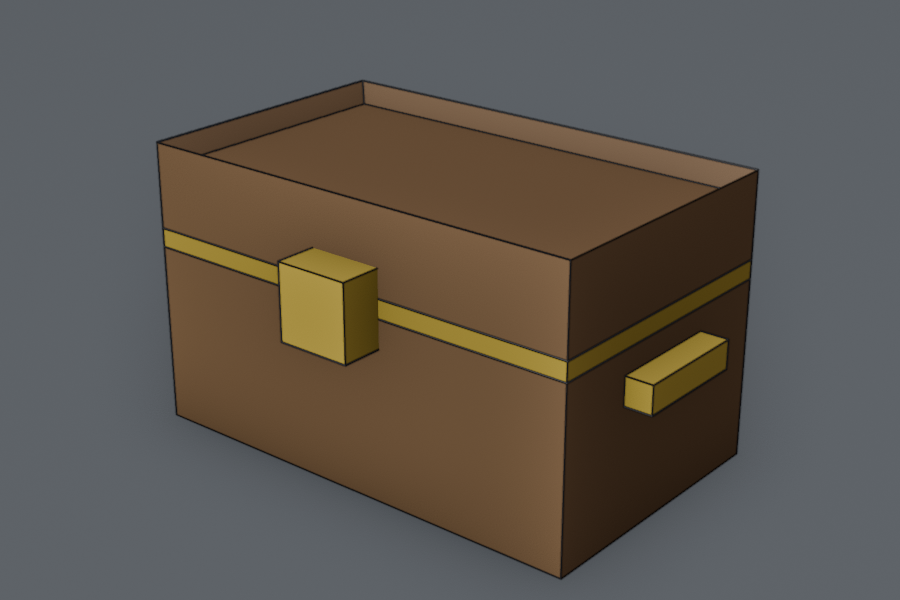
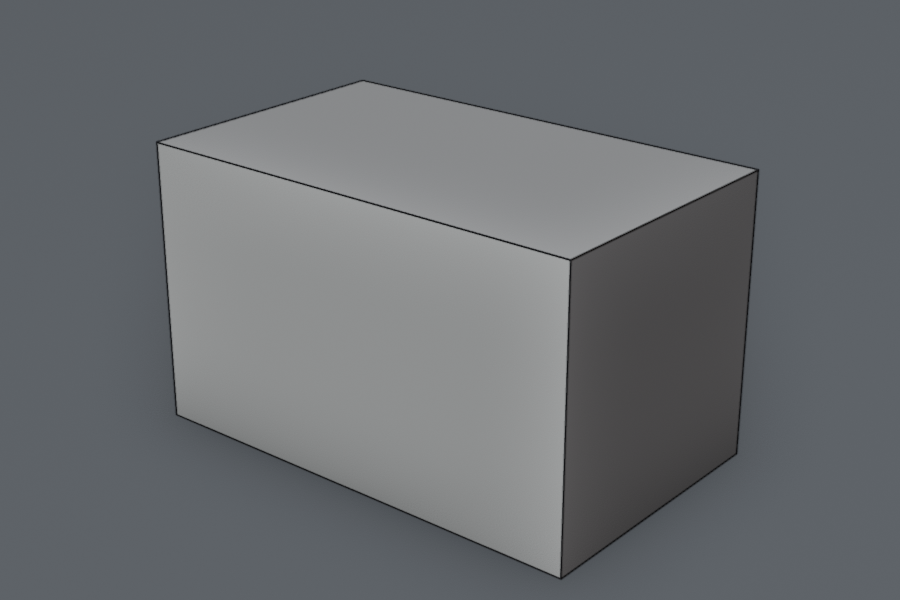
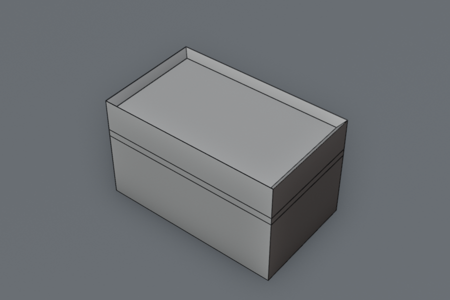
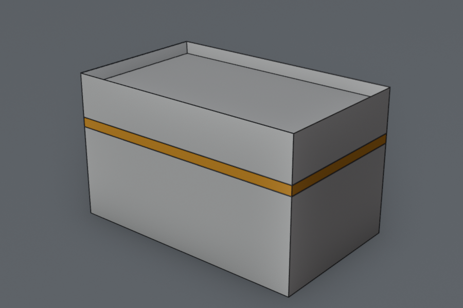
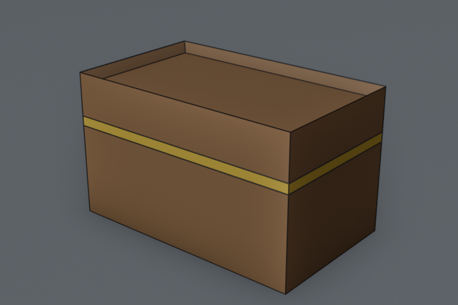
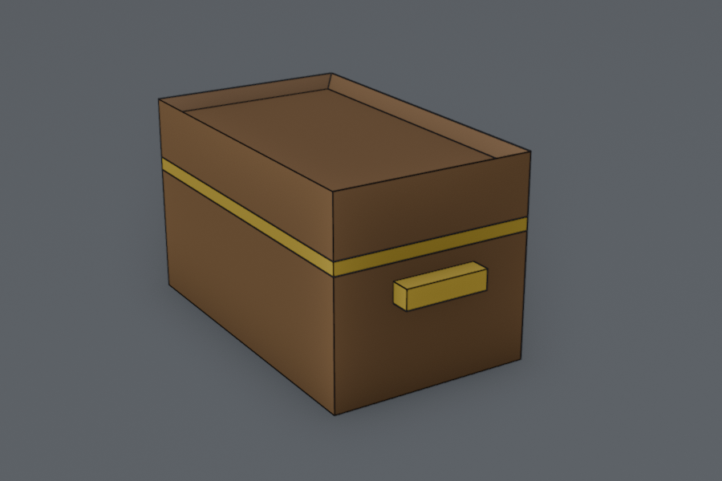
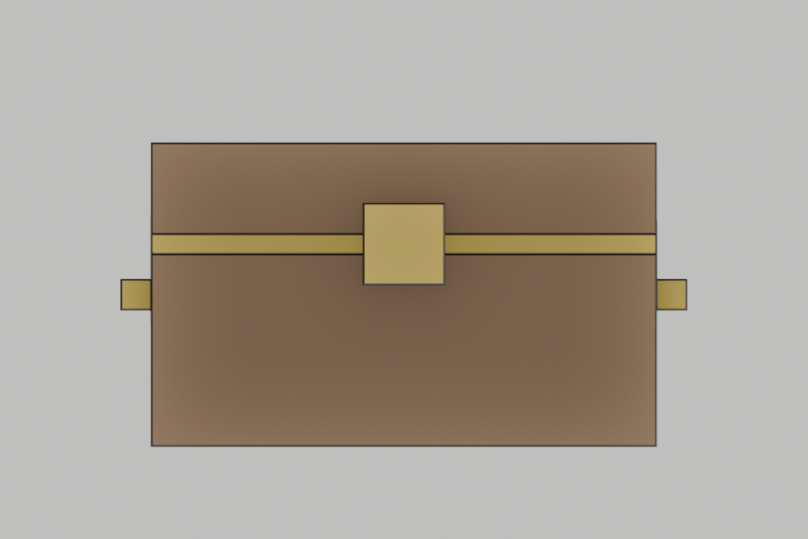
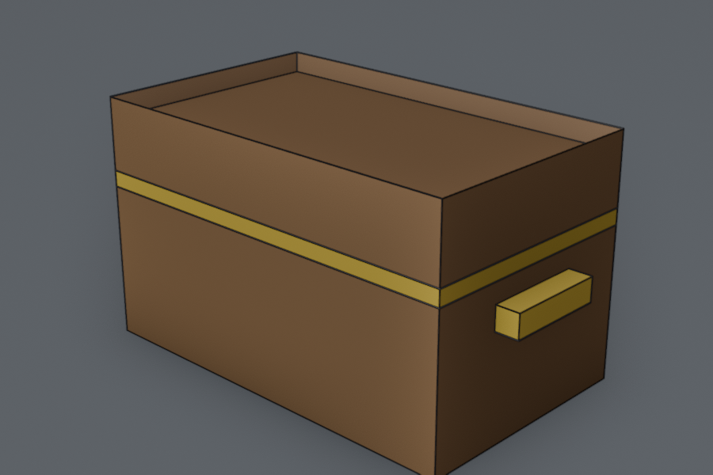

Lesson 10 · Blender track
Edit Mode and a treasure chest
Grant's Parts 3–4: Mirror modifier, then real modelling with vertices, edges and faces. You'll use it to build the reward at the end of your coin hunt.

Warm-up: from memory
The three habits before exporting a prop, with shortcuts.
Show answer
Origin at the base (Set Origin → Origin to 3D Cursor), at the world origin (Alt+G), transforms applied (Ctrl+A → All Transforms). Then export with Selected Objects and +Y Up.From Lesson 7: what does a state machine's change_state guard against?
Show answer
Re-running enter actions every tick when the state hasn't actually changed.① Watch, and do every step
Part 3: The Old Man (11 min)
| Chapter | Watch for |
|---|---|
| 00:34–03:45 Torso, head, arm | Building from primitives, plus duplicating objects. Same G/R/S grammar as Lesson 8. |
| 03:45 Challenge: the leg | Do it before watching the solution. |
| 05:18 Mirror modifier | Key idea: “The Mirror modifier mirrors a mesh along its local X, Y and/or Z axes, across the Object Origin.” Where the origin sits decides where the mirror plane is. |
| 09:51 Copying modifiers | A modifier is a setting stacked on top of the mesh, not baked into it yet. That matters at export (part ④). |
Part 4: Old Man Details (14 min)
| Chapter | Watch for |
|---|---|
| 01:31 Edit Mode (Tab) | The big one. Object Mode moves the object. Edit Mode reshapes its mesh data. That's the object vs data split from Lesson 8. |
| 01:40 Local View | Isolate the selection: Numpad /. |
| 02:00 Vertex / Edge / Face | 1 / 2 / 3 in Edit Mode. |
| 02:38 Extrude (E) | “a square gets turned into a box, a disc into a cylinder”. This is how new geometry grows. |
| 04:47 Adding objects in Edit Mode | Shift+A in Edit Mode adds the shape into the same mesh. You'll use this for the chest's lock. |
| 06:00 Loop Cut (Ctrl+R) | Hover to pick the ring, click, then slide. The manual: “Click LMB to create the cut at the chosen location, or RMB to create it at the center.” |
| 07:40 Inset (I) | “creates a border of faces around the selected faces”. Inset, then extrude, gives you panels and recesses. |
| 09:19–12:50 Delete, bridge, face loops | Alt+click selects a whole loop. You'll use it for the chest's metal band. |
② Recall: after watching, from memory
You scale a cube in Edit Mode (all selected). What does the object's Scale in the Sidebar show?
A Mirror modifier (X axis) produces a copy far from where you expected. Most likely cause?
You want a recessed panel on a face. Which sequence?
③ Completion: the chest body
Target: 1.0 m wide (X), 0.6 m deep (Y), 0.6 m tall (Z), with its origin at the base, a metal band around it, and a recessed lid. Fill in the blanks as you go. Rough positions are fine: this is art, not engineering.
Check your model against these after each step. The dark lines are the mesh edges, like in Edit Mode.









- New file (General). Keep the default cube. Tab into Edit Mode, A to select everything.
- Scale in Edit Mode: S X
0.5, S Y0.3, S Z0.3. Blank 1: the default cube is 2 m, so what size is it now? - Still in Edit Mode, lift it so its bottom sits on the ground: G Z
___. Blank 2. The origin stays where it was, at the world origin, which is now the base. No Set Origin needed. - Tab back and check the Sidebar (N): Scale is still 1, 1, 1. Blank 3: why don't you need Ctrl+A this time?
- Band: in Edit Mode, Ctrl+R over a vertical edge, slide up to about ⅔ height and click. Do a second cut just below it, so you get a thin ring of faces (about 4 cm tall).
- Lid recess: face mode (3), select the top face, I ≈
0.05, then E ≈-0.04. - Materials per face (Material Properties tab, the red sphere icon). Two slots, then assign one to the band:
- Slot 1: the cube already has a material. Rename it
Wood, brown, Roughness 0.8. Every face uses slot 1 for now. - Press + on the right of the slot list. A second, empty slot appears. With it highlighted, click New and name it
Gold(Metallic 1, Roughness 0.3). Don't pick Gold from slot 1's dropdown: that replaces the whole object's material. - Tab into Edit Mode, face mode (3). Click empty space to deselect, so nothing is still selected from step 1.
- Alt+click a short vertical edge of the band: the manual says this selects “the row of faces that's perpendicular to that edge”. Only the band turns orange (like the step 7 picture above).
- Highlight the Gold slot, then press Assign (it appears under the slot list only in Edit Mode). “Click the Assign button, and the material will appear on the selected object faces.”
- Slot 1: the cube already has a material. Rename it
- Name the object
Chestand save as~/learning/gamedev/blender/chest.blend.
Answers
Show answers
1. 1.0 × 0.6 × 0.6 m. 2.0.3, half the height. 3. You scaled and moved the mesh data, not the object, so the object's transform is already clean. Doing work in Edit Mode is often the cleanest way to get export-ready props.④ On your own: handles, lock, and into the game






- Handles with Mirror: a gold handle on each side (±X), built once and mirrored with a Mirror modifier. Think about where the handle object's origin must be.
- Lock: a small gold block on the front, centred on the band, added into the Chest mesh (Edit Mode Shift+A). The front is −Y in Blender (the side you see in Numpad1 front view).
- Export
chest.glbinto your Godot project'smodels/, so that both handles arrive in Godot. - In Godot: a solid
chest.tscn(the Lesson 9 pattern: body type, collision shape sized to the box, no scaling), placed where the coin hunt should end, with its front facing the way the player arrives.
Hint 1: where the handle's origin goes
Show hint
Add the handle cube in Object Mode with the 3D cursor at the world origin, so its origin is at (0, 0, 0), the chest's centre line. Then Tab and shape and move it to the +X side in Edit Mode (say G X0.53). The origin stays on the centre line, so the X mirror lands exactly on the other side.Hint 2: only one handle shows up in Godot
Show hint
Modifiers aren't part of the mesh until they're applied. The glTF exporter's Data → Mesh → Apply Modifiers option, which “Export[s] objects using the evaluated mesh, meaning the resulting mesh after all Modifiers have been calculated”, is off by default. Tick it. (I checked the default in Blender 5.2.2:False.)Hint 3: which way the chest faces in Godot
Show hint
Blender's front (−Y) becomes +Z in Godot after the +Y Up conversion, the same asMODEL_FRONT from Lesson 6. Rotate the chest instance in the world around Y so +Z points toward the player's approach.What I tested
Show results
I built this chest with a script in Blender 5.2.2 (body scaled and moved in Edit Mode, a two-cut band, an inset lid, the lock added into the mesh, and handles on a separate object with an X Mirror modifier), selected Chest and Handles, and exported twice:| Apply Modifiers | Handles in Godot 4.7.2 |
|---|---|
| off (default) | one handle only: x from 0.50 to 0.56 |
| on | both: x from −0.56 to 0.56 ✔ |
Wood and Gold. Object scale stayed 1, 1, 1 throughout, with no Apply needed.This chest is also the natural first prop to animate: a lid that opens when the last coin is collected. That needs the lid as its own object with its origin on the hinge line, so keep that in mind if you feel like experimenting.
For next session (spaced recall)
- Edit Mode vs Object Mode: which one changes the data, and why that saves you an Apply.
- What decides where a Mirror modifier mirrors, and which export option it needs.
- From Lesson 9: whose origin survives a Join?
Kids: a chest at the end of the coin trail gives them a goal to run toward. Watch whether they spot it, and whether they want it to do something. That answer can shape Lesson 11.
A loop cut going the wrong way, a mirror that lands somewhere odd, or a face that won't take its material? Tell me which step and what you see. These are all quick fixes once we know the symptom.